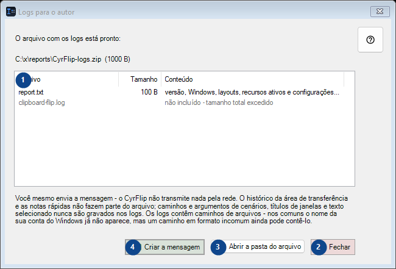
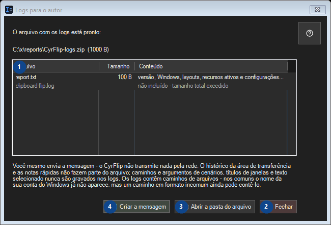

Logs para o autor
Para que serve
Leia as explicações numeradas, escolha os valores necessários e continue com o comando da janela.


Ordem de utilização
Leia as explicações numeradas, escolha os valores necessários e continue com o comando da janela.
Elementos
1. O arquivo com os logs está pronto:
Esta área mostra o conteúdo ou estado atual. Selecione uma entrada para trabalhar com ela. Arquivo / Tamanho / Conteúdo
Os seus atalhos2. Fechar
Use este comando para a ação indicada. Leia qualquer confirmação antes de aceitar.
Os seus atalhos3. Abrir a pasta do arquivo
Use este comando para a ação indicada. Leia qualquer confirmação antes de aceitar.
Os seus atalhos4. Criar a mensagem
Use este comando para a ação indicada. Leia qualquer confirmação antes de aceitar.
Os seus atalhos